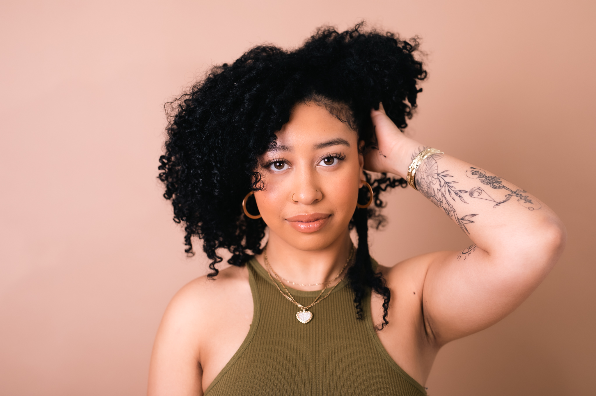

MEET JAZ

I have always had a passion for hair and make up ever since I was a little girl. Always getting into my moms cosmetics I found a way to express myself and pursue a career that I genuinly love. Like most curly girls, I struggled with embracing my natural hair. After years of straightening my hair, I finally took the leap and big chopped my hair. Learning to love and be patient with my hair it inspired me to start my jouney to educate and guide other people with curly hair to do do the same.